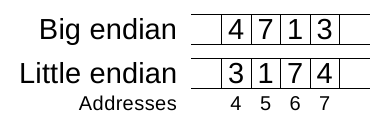
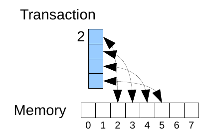
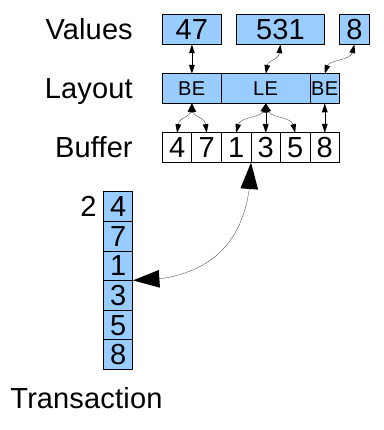
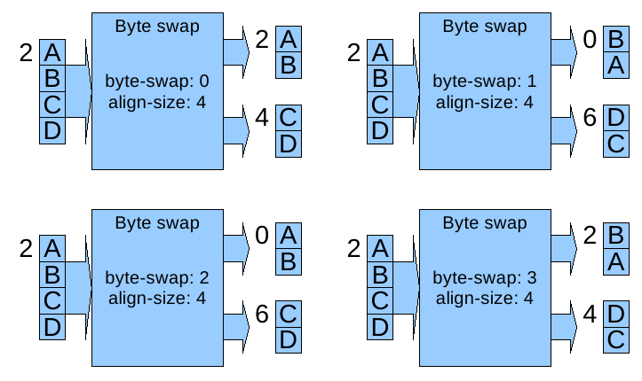
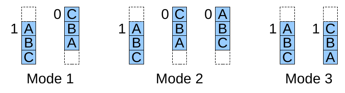
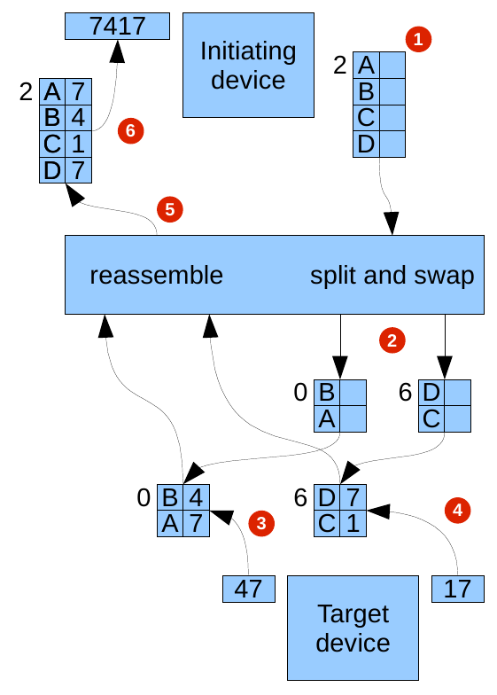

This application note tells you how to model byte order, also known as endianness, and byte swapping in Simics. Its intended audience is developers modeling a system or part of a system. First this note will describe byte order and byte swapping, and what they mean in the context of Simics. The concepts are tightly tied to how Simics models devices, buses and memory transactions so this note will give a brief overview of this subject, but assumes you know DML and the basics of modeling a system in Simics. DML and system modeling is described in the Model Builder User's Guide.
The Simics abstraction level means that you only need to know as much about a system as someone who will write software to access its devices. This information is usually found in a Programming Reference Manual or similar document. This note is a complement to such documentation and shows you how to implement byte order and byte swapping in Simics.
Byte order describes the order you store a byte representation of a value which does not fit in one byte. You use endian conversion to convert between an integer and its byte array representation. In Simics this is often used when accessing memory and devices in the simulated machine (known as the target). Simics's model of memory is an array of slots, where each slot can contain one byte. Indexes into the array are called addresses. Low addresses comes before high addresses. To store a value which does not fit in a single slot you split the value into byte sized parts and store these parts in consecutive slots. In Simics there are two ways to store multi-byte values: big endian, and little endian. Big endian means that the parts are stored with the most significant byte in the slot with the lowest address, and little endian means the opposite, that the least significant byte of the value is stored first.

Figure 1 shows how a value is stored in a memory where each slot can hold a single digit. Simics memory works the same, except that each slot can hold a byte instead of a digit.
In a real system memory does not work as a simple array of byte sized slots. At the hardware level data is often addressed in larger parts than bytes. However, the model of memory presented to software running on the system is still an array of byte sized slots. This is an abstraction of the real hardware implementation, which is built from buses, or something akin to buses. When a device accesses a part of memory the access may need to travel over several buses. Each time the access crosses from one bus to another the order of bytes may change. This is called byte swapping. Simics models the memory spaces of a system with instances of the memory-space class. It is this model which models byte swapping in Simics. Its complete description can be found in the Model Builder User's Guide and the Simics Reference Manual. Here we are only interested in the pieces which control byte swapping: the align-size and byte-swap fields of the map attribute's entries.
In Simics memory accesses are modeled as transactions. Each transaction has three major parts: an array of slots where the data read or written by the transaction is stored, an address which is the first address in the memory space the transaction will access, and information about if the transaction is a read or write transaction. Each transaction accesses one or more consecutive slots in a memory space. To initiate a transaction you use methods in the memory_space interface. The memory space looks up which element in the map matches the transaction and uses the information in this element to forward the transaction to the target device. If the transaction is large enough to match more than one element it is first split into one transaction per element accessed. Before forwarding the transaction the memory space will modify it according to the align-size and byte-swap fields. When the transaction finally reaches a device it is handled by the device. For plain RAM or ROM devices, this is taken care of by ram or rom instances. Other devices handles transactions with the io_memory interface. This is handled by banks in DML.

Figure 2 shows how data is copied between a transaction and a memory, i.e., a RAM or ROM, in Simics. No endian conversion is performed since both the transaction and memory works on bytes.
Now we have the required context for byte swapping and byte order modeling in Simics. The next sections describe how to handle byte order when writing device models and how to use byte swapping when modeling systems with buses which perform byte swapping.
This section will describe how to perform endian conversion and when to do it. It is focused on modeling this in DML. DML automates most of the endian conversion. As a developer of a model you only have to set the correct byte order for the registers and data structures you use. The concepts DML uses to describe the byte order of values in the target are layouts, which are used to describe the layout of memory buffers, and registers, which are used to describe the byte order of a device's own registers.
The byte order of registers is specified in the byte_order parameter on the bank containing the register. Allowed values for the parameter are "little-endian", "big-endian" and undefined. All the registers in the bank will have this byte order. If all the banks in the device have the same byte order you can define the byte_order on the device instead. This value will be inherited by all the banks which do not set their own byte order. The byte order defines how to convert between the value of the register and bytes written to or read from it.

A layout describes the layout of a piece of host memory. It is similar to a struct in DML or C, but can only contain members of type integer, layout, or bitfields (which is just a special kind of integer). Each layout type also specifies a byte order, which specifies the byte order to use for its integer and bitfields members. The allowed values for the byte order are "little-endian" and "big-endian". This specifies which order the bytes of a member are used when interpreted as an integer. An overview of how layouts work and where they fit in is provided in figure 3. As layouts are intended to describe data structures in the simulated system's memory there is no implicit padding between the members or at the end of the layout.
To use a layout to access parts of a data structure in the simulated memory you use a memory transaction to move data between a host memory buffer and target memory. Use SIM_get_mem_op_value_buf and SIM_set_mem_op_value_buf to extract a buffer containing the transactions data or replace the data in the transaction with a buffer. For PCI devices you do not have to do this manually, as the PCI library provides methods to perform these tasks. More details about how to access target memory is described in the Model Builder User's Guide. Once you have the data in a buffer, cast the pointer to the buffer to a pointer to the wanted layout type. Then you can use the layout pointer to access the fields of the layout, just like you would access the fields of a struct. DML automatically maps between the bytes pointed to and values as specified in the layout declaration.
DML also allows you to access parts of integer values based on bit indexes. This feature, although it may appear related to byte order, is unrelated and will not be discussed further here.
In C you have to handle the byte order manually. Simics provides some functions and macros to make this easier. The simplest way to handle byte order is to use SIM_get_mem_op_value_le, and SIM_get_mem_op_value_be to get values out of a memory transaction and SIM_set_mem_op_value_le, and SIM_set_mem_op_value_be to put values into a memory transaction. These functions only works on transaction sizes up to eight bytes, but this is often enough, at least when you implement registers. As you can see there are two versions of the getter and two versions of the setter. The functions with the _le suffix uses little endian byte order to convert between values and bytes, and the ones with the _be suffix uses big endian byte order.
If you need transactions larger than eight bytes to access data structure in memory with complex layout you must use a two stage process instead. You must move data between the transaction and a buffer in host memory and you must convert between values and bytes in the buffer.
To get values out of a transaction you first use SIM_get_mem_op_value_buf to get a buffer containing the data in the transaction. Then you can convert bytes in this buffer to integer values with the load macros. The load macros are provided for value sizes from one byte up to eight bytes in both load big endian and load little endian variants.
To put values into a transaction you first store the values into a buffer with the store macros, and then you put this buffer into the memory transaction with SIM_set_mem_op_value_buf. As with the load macros the store macros are provided for value sizes from one to eight bytes, and in both little endian and big endian variants.
To get access to the load and store macros, include simics/util/swabber.h:
#include <simics/util/swabber.h>
The load macros are named LOAD_{endian}{size}(p), where {endian} can be BE for big endian loads or LE for little endian ones, and {size} can be 8, 16, 32, or 64 and is the size in bits of the value to load. The macros take one argument: a pointer to the buffer where the value should be stored.
The store macros are named STORE_{endian}{size}(p, x), where {endian} and {size} can have the same values as in the load macros. The macros take two arguments: a pointer to the buffer where the value should be stored, and the value to store.
The load and store macros should only be used for aligned pointers. If you need to load or store from unaligned pointers use the unaligned variants of the macros instead. They are named the same as the normal macros, but with an UNALIGNED_ prefix, for example UNALIGNED_LOAD_BE64.
Byte swapping in Simics models the byte swapping performed between adjacent buses. It is performed by memory spaces based on the align-size, and byte-swap fields. Both fields are parts of the map attribute's entries. This means that you can apply byte swapping for all devices mapped into a memory space, no matter if they are memory spaces, or any other kind of device you can add to a memory space. For information about the memory-space class and its map read the Model Builder User's Guide and the Simics Reference Manual.
Before byte swapping a transaction the memory space splits it into sub transactions based on the align-size. At each even multiple of the align size there is an alignment boundary. Any transaction which crosses such a boundary is split into two transactions. If a transaction crosses more than one boundary it is split at each boundary it crosses.

If the alignment size is 2, 4 or 8 you can enable byte swapping with the byte-swap field. Byte swapping is performed for each of the sub transactions individually. Byte swapping is based on the size of the transaction and the align-size. By default the byte swap mode is 0, which means that the memory space will not perform any byte swapping of transactions for the entry. If you set byte-swap to 1 then each alignment sized chunk will be reversed. This means that the address of a transaction may be changed. If you set byte-swap to 2 then each alignment sized chunk will be reversed and then the parts of the chunk accessed by the transaction will be reversed again. Finally you can set byte-swap to 3, which reverses the bytes in the transaction. Figure 4 compares the byte swap modes.
Byte swapping can be hard to understand. A couple of examples will make it clearer. Each example takes one transaction and describes what happens to it when it is split and byte swapped. Let us begin with something simple: a transaction of size 4 performing an aligned access with align-size 4. This transaction does not need to be split, so let us move on to what happens to it for the different byte swap modes. In the byte swap mode 0 the transaction is unchanged, since this mode never modifies any transactions. In byte swap mode 1 the slots in the transaction are reversed, since this mode reverses slots based on the align size and the transaction has the same size as the align size. In byte swap mode 2 the transaction is unchanged. The reason is that the slots are first reversed based on the align size and then reversed again based on the transaction size and the transaction is aligned and has the same size as the align size. In byte swap mode 3 the slots in the transaction are reversed, since the mode reverses the slots in the transaction.

Let us work through a more complex example: a transaction of size 3 at address 1, but still accessing a device with align size 4. As always this transaction is unchanged if the device is mapped with byte swap mode 0. See figure 5 for a graphical representation of how the transaction is affected by the other byte swap modes. With byte swap mode 1 the slots from address 0 to address 3 are reversed, but this transaction only contains slots from address 1 to address 3; there is no slot at address 0. We still reverse as if there was a slot at address 0 and then we drop this pseudo slot. This means that the resulting transaction will be based at address 0 and contain the same slots it had from the beginning, but in reverse order. Byte swap mode 2 first performs the same operation as byte swap mode 1 and then it reverses the slots in the transaction. The result of this is that the transaction will be based at address 0 and contain the original slots in their original order. Byte swap mode 3 reverses the slots in the transaction and always leaves the base address of the transaction intact. This means that the byte swapped transaction will be based at address 1 and contain its original slots, but in reverse order.
Once the sub transactions are handled they are reassembled by the memory space, and that is when the identities of the slots comes into play. The reassembled transaction has the same shape as the original transaction and all the slots comes in the same order as they did in the original transaction.
Which mode to use depends on how the bridge chip you want to model works. For information about this you need to read its documentation.
The swapping can often be set up in a component when creating the memory spaces of the system. A device model can also set it up when using the map_demap interface to map devices into a memory space. It is set up in the align_size and reverse_endian members of the map_info_t value passed into the map_demap methods. align_size specifies the align size and reverse_endian the byte swap mode.

Figure 6 shows an example of a complete memory transaction involving both byte order conversion and byte swapping. It shows a device initiating a load of 4 bytes interpreted as a big endian number at address 2. The system model maps this address to a target device, with an align size of 4. The target device has two registers targeted by the transaction: a big endian register of size 2 at address 0 and a little endian register also of size 2 at address 6. The transaction goes through several steps: